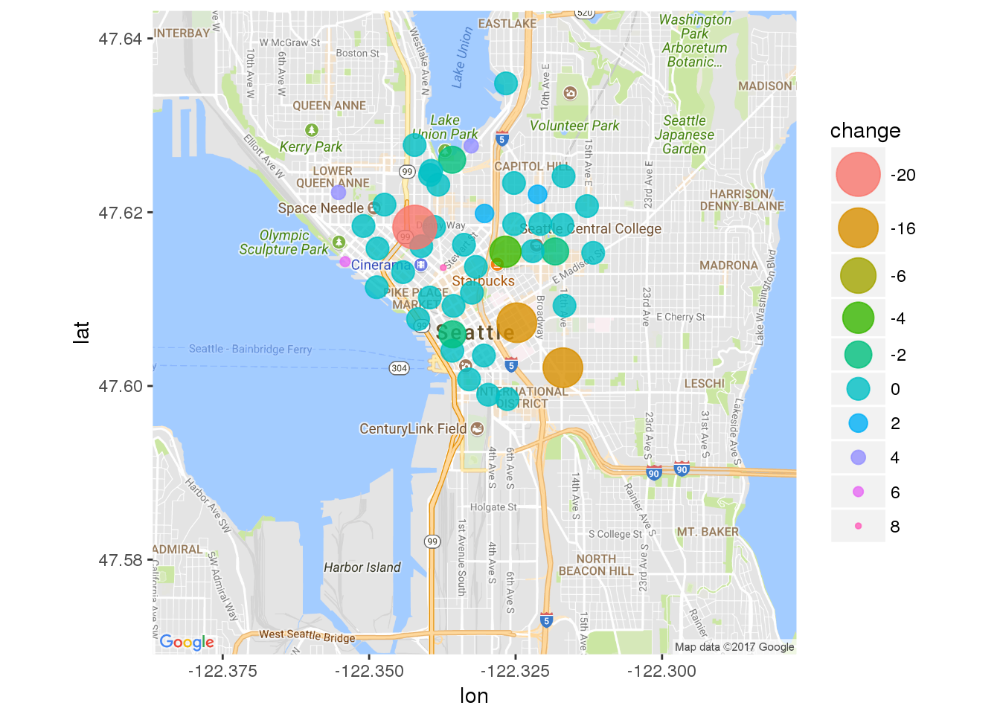
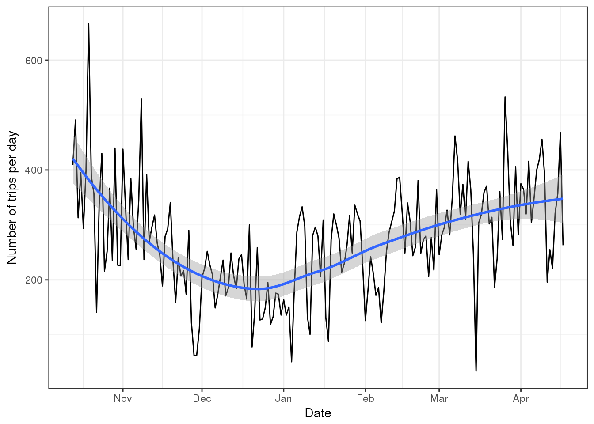

Graphical Analyses of Seattle’s Bicycle Sharing System
We find the orignal information for this project here.
Introduction
This is a report and analysis on Seattle’s bicycle sharing trends. The data includes weather reports for the area (excluding summer logistics), the station locations, as well as trips taken by cycle riders. Future explorations of this type of data could include investigating more extensively overall public transportation data trends for this area. This would serve to establish a better understanding of public transportation trends. Interestingly enough, this transportation company has since dissolved and the data points that were collected from this company are therefore older. Thus, these trends are potentially not reflective of bicycle sharing as it stands in Seattle to date.

Station Locations
Look how widespread the rental stations are all over Seattle!
## n_distinct(install_date)
## 1 9## # A tibble: 9 x 2
## install_date count
## <date> <int>
## 1 2014-10-13 50
## 2 2015-05-22 1
## 3 2015-06-12 1
## 4 2015-07-27 1
## 5 2015-09-15 1
## 6 2015-10-29 1
## 7 2016-03-18 1
## 8 2016-07-03 1
## 9 2016-08-09 1## n_distinct(station_id)
## 1 58
Locations (zoomed)
For optimal viewing, here are the station whereabouts with some zoom for location precision. 
Look at all those stations! Its hard to believe this company managed to go out of business!
Current Dock Count

Quite a few bikes to choose from!
Change in Number of Bike Docks Per Station

11 stations lost bike docks, 39 docks stayed the same, 8 stations gained docks.
Number of Rides Per Day

People really like going on fall and spring rides multiple times a day. Can you blame them though, Seattle in the fall is remarkable!!

Plotting trips per month (by season; excluding summer)
## [1] "trip_id" "starttime" "stoptime"
## [4] "bikeid" "tripduration" "from_station_name"
## [7] "to_station_name" "from_station_id" "to_station_id"
## [10] "usertype" "gender" "birthyear"
## [13] "start_dt" "stop_dt" "start_date"
## [16] "stop_date" "ym" "Season"
Converting Trip Duration from Seconds to Minutes